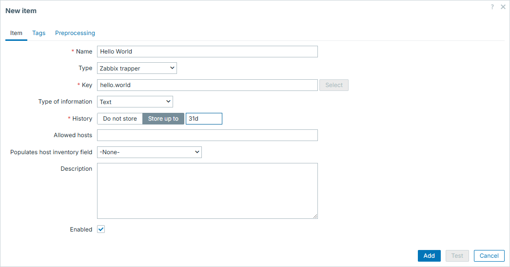
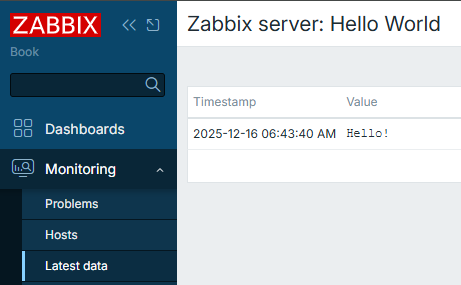
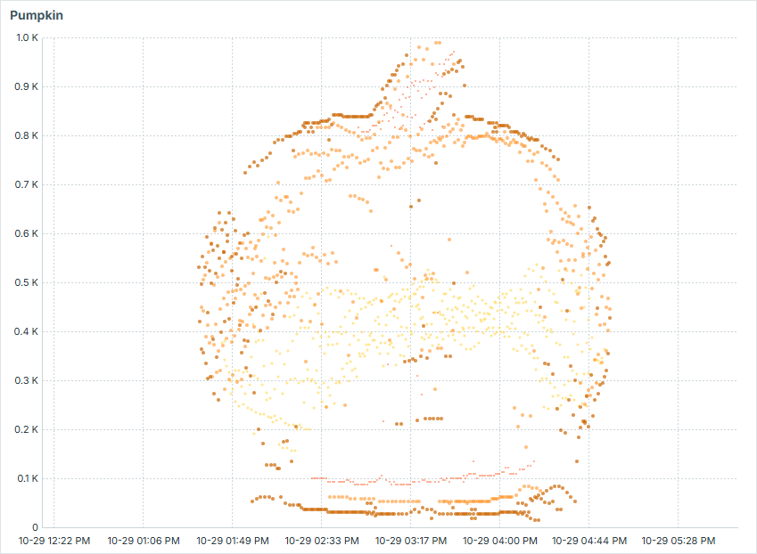

Zabbix trapper
So you already know what is the difference between Active and Passive
Zabbix agent item types. However, there is a third, special item type which
also starts with "Zabbix". And that is "Zabbix trapper".
Most likely not by coincidence it is named so, since by its nature it reminds the "SNMP trap". Data in both cases is not expected to arrive in predefined frequency, but rather "when needed" or "when something happens".
Zabbix trapper items are extremely useful when you have:
- places where Zabbix agent can't be installed
- "heavy", long running scripts, which produce some valuable monitoring data
- scripts that otherwise do some other things, but at some points you want to send some data to be monitored (i.e. monitoring is just a part of the script logic, not the main intent). For example, you send the duration of how long your script was running
- temporary or ad-hoc metrics (e.g. some historical data which was not monitored at the time of occurrence to be analysed)
How to send data?
There are two ways to send values to Zabbix trapper item:
- using
zabbix_sender - via Zabbix API
Info
Zabbix trapper item receives data over same TCP port as Zabbix agent items
(10051) if zabbix_sender is used
In both cases, item configuration from Zabbix GUI perspective doesn't differ. Once configuring Zabbix trapper items, main thing is to have unique meaningful item key (it must be unique on host level) and type of information of your choice. Type of information possibilities are same to classic Zabbix agent items.
Hello World
In this example, we will simply send a string "Hello!" to Zabbix trapper item.
First we will create Zabbix trapper item on Zabbix server. Navigate to template or host and hit "Create item":

Then we can go to CLI and employ zabbix_sender to pass agreed value to our
newly created Zabbix trapper item. You have to take item key from previous step,
we will use it here as -k:
binary@linux:~$ zabbix_sender -z 127.0.0.1 -s "Zabbix server" -k "hello.world" -o "Hello!"
Response from "127.0.0.1:10051": "processed: 1; failed: 0; total: 1; seconds spent: 0.000047"
sent: 1; skipped: 0; total: 1
binary@linux:~$
And that is about it! Our trapper item is updated.

Info
Parameters used here are the following:
-z - Zabbix server
-s - host, where your trapper item resides
-k - item key, same as you created in GUI
-o - value itself
For more options, check man zabbix_sender or online documentation
You can "travel in time" with zabbix_sender
Typically you don't care about timestamps - when exactly the data was collected. This is actually applicable to both Zabbix agent and Zabbix trapper items. You simply set the checking frequency (in Zabbix agent item case) or control it on your own (in Zabbix trapper item case). But in both cases you leave it for Zabbix - data is collected at desired pace and that is mainly all that you care.
But what if you want to restrict / control the timestamps as well, not only the data itself that is being collected?
zabbix_sender offers one sometimes overlooked feature. It allows you to do
exactly what's described above - it allows you to "travel in time" with your
items. For this, we need to employ a combination of zabbix_sender options:
-T, --with-timestamps-i, --input-file
Info
Here is even one more overlooked feature of this approach - you actually
don't even need files necessarily. Providing - for -i means reading
from standard input
00 seconds
One of the examples when you might want to employ this feature is to force data
to be stored precisely at 00 seconds of the minute. Imagine you run a script
each minute and it might run for duration anything between 10 and 50 seconds.
This script in the end produces time in seconds, how long did it run - and you
send this duration to Zabbix via zabbix_sender:
#!/bin/bash
start_ts=$(date +%s)
sleep $((RANDOM%40+10))
end_ts=$(date +%s)
duration=$((end_ts-start_ts))
zabbix_sender -z 127.0.0.1 -s "Zabbix server" -k "undefined.time" -o ${duration} &>/dev/null
exit 0

Problem here is that since script runs with chaotic durations, results will be displayed on time axis in unequal intervals between collected values:

That is visually unappealing and we can easily fix it by forcing Zabbix to store results not when the value was sent to Zabbix server, but at the 00 seconds of the minute the script was started:
#!/bin/bash
start_ts=$(date +%s)
item_value_ts=$(date -d $(date +%H:%M) +%s)
sleep $((RANDOM%40+10))
end_ts=$(date +%s)
duration=$((end_ts-start_ts))
sender_input="\"Zabbix server\" undefined.time.00 ${item_value_ts} ${duration}"
zabbix_sender -z 127.0.0.1 -T -i - &>/dev/null <<< "${sender_input}"
exit 0
Now the values are collected exactly at the 00 second of each minute:

And our graph becomes smooth:

The bigger the possible gaps between the values, the more such approach makes sense.
Past incidents
Say you had some incident which had no or had poor monitoring. Say you regret it
and find some valuable data which you would like to visualize. With Zabbix
trapper items and combination of -T and -i options it is absolutely
possible. Just form sets of data from your data sources (e.g. logs) and feed
them into Zabbix by creating some temporary trapper items. You will then have a
view of what has happened, even if you didn't monitor it in real time.

Have some fun
Similar to above, but in more creative fashion, you can visualize some ASCII art in Zabbix by creating sets of data aligned so in time and value amplitude, that it would form some image. That is a fun way to entertain your colleagues or just sharpen your skills in scripting!

Using Zabbix API to send data
Instead of using zabbix_sender, you can also send data via Zabbix API, by
using history.push method.
#!/bin/bash
zbx_url=http://127.0.0.1/zabbix/api_jsonrpc.php
zbx_header="Content-Type: application/json; charset=UTF-8"
zbx_auth_token=$(cat $(dirname "${0}")/token.conf)
params="[{\"itemid\": ${1}, \"value\": \"${2}\"}]"
payload="{\"jsonrpc\":\"2.0\",\"method\":\"history.push\",\"id\":1,\"params\":${params}}"
curl -s --max-time 3 \
-X POST \
--data "${payload}" \
-H "${zbx_header}" \
-H "Authorization: Bearer ${zbx_auth_token}" \
"${zbx_url}"
exit 0
So now by running this with specific Zabbix trapper item id and intended value, you will update this item:
binary@linux:~$ ./history_push.sh 69272 0 | jq '.'
{
"jsonrpc": "2.0",
"result": {
"response": "success",
"data": [
{
"itemid": 69272
}
]
},
"id": 1
}
binary@linux:~$ ./history_push.sh 69272 1 | jq '.'
{
"jsonrpc": "2.0",
"result": {
"response": "success",
"data": [
{
"itemid": 69272
}
]
},
"id": 1
}
binary@linux:~$

Conclusion
If you work with Zabbix long enough, you will start having this feeling of when to use "Zabbix trapper" items over classic "Zabbix agent" items. In some particular cases they are extremely useful (or even the only option to go with).
In this section you have learned how to create simple Zabbix trapper item, as well as some more advanced approaches.
Using Zabbix trapper is heavily related to more programmatic approach towards updating item values, so if you are into programming and enjoy monitoring - you should definitely try it out.
Questions
- Do you need Zabbix agent if you want to use
zabbix_sender? - Does Zabbix trapper item have checking interval?
- Can you send text for Zabbix trapper items, or is it only for numerical data?